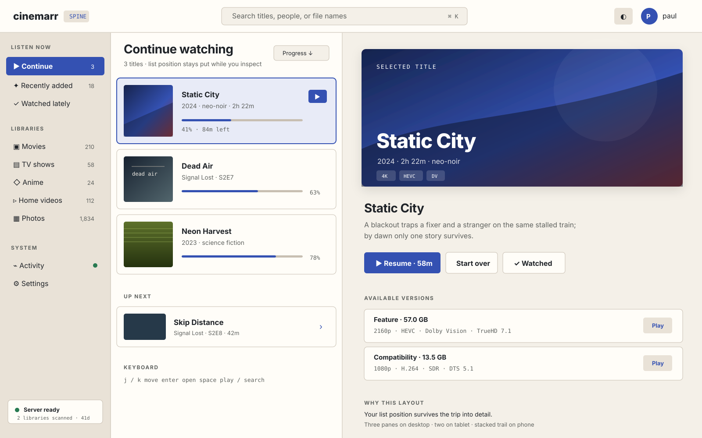
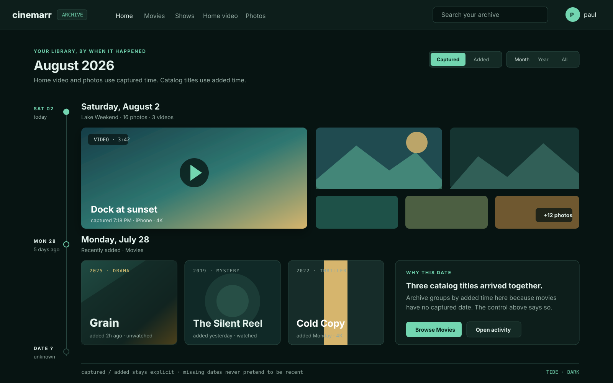
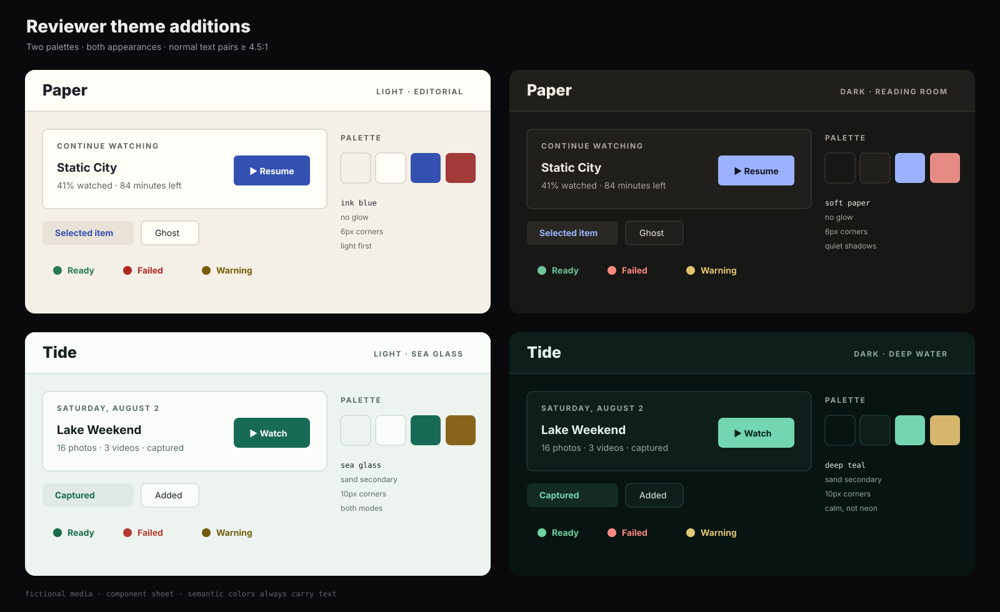

Two missing use cases, not two more launch commitments.
Spine preserves browsing context. Archive gives home video and photos a first-class surface. Paper and Tide are both light-capable, low-motion themes whose normal text pairs meet 4.5:1 contrast.
fictional mediano network review candidatesSpine × Paper light
A source pane, stable result list, and item inspector remain visible together. This is a human browsing layout, not Deck without the telemetry.

Archive × Tide dark
A chronological Home for personal media. Captured and added time remain explicit, and missing dates live in their own honest group.

Paper and Tide, both appearances
Paper
Warm stock, graphite, ink blue. Light first, quiet in dark mode, and deliberately free of grain or glow.
Tide
Sea-glass green, deep teal, and a sand secondary. A calm family missing from the existing red/gold/neon set.

The recommendation and implementation critique live in
UI-LAYOUTS-REVIEW.md. The short
version: prove Classic + Catalog + Amber on web before turning any other
layout into a compatibility promise.